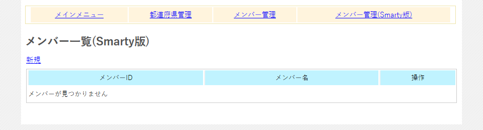
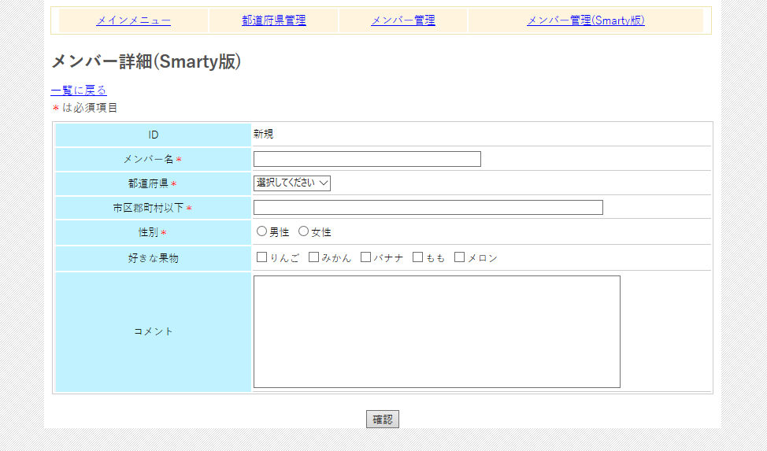

２００．サンプル概要とSmartyについて
この章で説明するサンプルは前章の
住所録の
Smarty版です。
Smartyというのは
PHPのテンプレートエンジンで、古くから使われていて安定した動作する
テンプレートライブラリです。
PHPはプログラムとHTMLを同じファイル（PHPファイル）に記述することができ、また、PHPブロックとHTMLを交互に記述できるなど、柔軟な言語なのですが、反面、ソースとHTMLが混同してしまいがちです。可読性も失われます。
そのためPHPの技術者は
PHPとHTMLを分けて記述するという習慣になることが多いです。前章でのサンプルも
実行ブロック、関数ブロック、HTMLブロックなど、分けて記述してます。
しかし、そういった
ブロック分けも限界があり、例えば
プログラマとデザイナが同じ空間にいない現場では（よくある話です）、複数の人が同じPHPファイルを修正することも多々あり、それが
不具合や先祖返りを生み出すことになってしまいます。
またデザイナーさんは極力PHPファイルは触りたがらないものです。
そのため、
プログラム部とデザイン部を分けて記述するテンプレートエンジンは、PHPの開発でなくてはならないものとなっています。
テンプレートエンジンといいましても、多数存在し、フレームワークにくっついているものもあります。
ここではその中でも
老舗である
Smartyによる記述を紹介します。
まあ。新しもの好きの方には不満かもしれませんが、簡単に使えて動作速度も速いので、僕は長年愛用しています（新しい文法覚えるのも結構つらいしね）。
Smartyのセットアップ
この
PHPBaseには
Smarty本体はついていません。理由は、最新のものを使用したほうがいいでしょうし、また
Smartyには、現在2つのバージョンがあって、PHPのバージョンによって別のものを使用する必要があります。
Smartyへのリンクはあえて記しませんが
Smartyで
Google先生に聞けばすぐ出てきます。
お使いののPHPのバージョンに合った
Smartyをダウンロードしたら、
Smartyのlibs（解凍したディレクトリ内にあります）を、以下のディレクトリ階層の
Smarty/libsにコピーします。
GitHubから取得した状態ですと
cache、config、templates_cのディレクトリがありませんので、各自作成してください。
- Smarty
- cache
- config
- libs
- templates
- templates_c
sources-
そして
Smartyディレクトリごとアップロードすればいいのですが、アップロード後に
cacheとtemplates_cのパーミッションに
その他による書き込み許可を与えてください。そうしないと
Smartyが動きません。
これで
Sartyのセットアップは完了です。
Smarty版のメンバー一覧にアクセス
Smartyのアップロードが完了したらメインメニューから
メンバー管理（Smarty版）にアクセスします。
前章で紹介した内容とほとんど同じです（タイトルにSmarty版が入ってます）。詳細画面でメンバーの追加、更新ができ、一覧ページで削除ができます。

図0200a
Smarty版のメンバー詳細にアクセス
新規で以下の画面が出ます。一覧ページ同様
Smarty版となってます。

図0200b